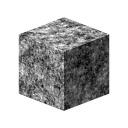

3D Perlin Noise Fractal

In: Texture Generators/Noises
Intermediate
Description
The 3D Perlin Noise Fractal node generates a fractal Perlin noise in 3D space based on the Position Map input.
This node can be tested with Cube 3D GBuffers as input instead of an actual baked map (as seen in the Example Image below).
Alert
This noise is meant to be used with the GPU engine only (i.e., Direct3D or OpenGL). Go to Tools > Switch engine... or press the F9 key to select the desired engine.
Parameters
- Invert Boolean
Inverts the output image. - Scale Float
Controls the scale of the fractal 3D Perlin noise. - Size Float3
Controls the size of the fractal 3D Perlin noise in the X, Y and Z axes. Non-uniform values result in a stretching or squashing effect. - Offset Float3
Applies an offset to the position of the fractal 3D Perlin noise in the X, Y and Z axes. - Distortion Intensity Float
Controls the intensity of a warping effect applied on the fractal 3D Perlin noise. - Distortion Scale Multiplier Float
Controls the scale of the deforming pattern used in the warping effect controlled by the Distortion Intensity. - Min Level Integer
The minimum level of of repetition used in the fractal pattern. A wider minimum/maximum range results in a richer pattern with variation on more frequency ranges. - Max Level Integer
The maximum level of of repetition used in the fractal pattern. A wider minimum/maximum range results in a richer pattern with variation on more frequency ranges. - Roughness Float
Controls the balance between low and high levels of repetition in the fractal pattern.
Note: A value of 0 results in an output which is not in line with other low values following it. This is expected. - Lacunarity Float
Controls how the applied fractal pattern fills space. A higher value results in less gaps in the pattern and a denser noise. - Global Opacity Float
Controls the range of the fractal 3D Perlin noise values around the Baseline value. - Baseline Float
Applies an offset to the baseline luminance value for the 3D Perlin noise value distribution. - Contrast Float
Adjusts the contrast of the 3D Perlin noise. - Absolute Boolean
Uses absolute values in the 3D Perlin noise. This effectively inverts the value distribution for values below 0.5. - Enable Tiling Boolean
Adjusts the 3D Perlin noise so its resulting pattern repeats in the X, Y and Z axes.
Example Images